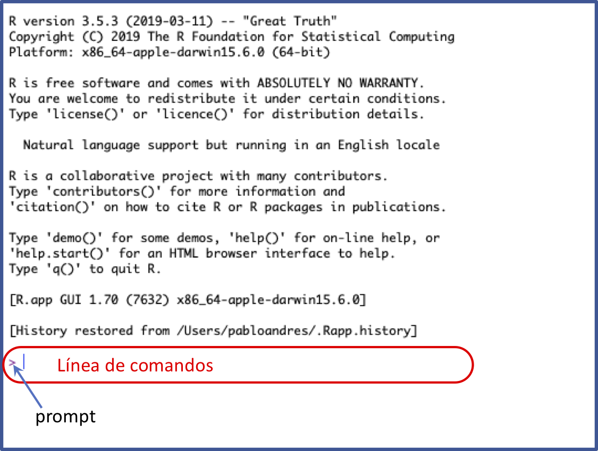
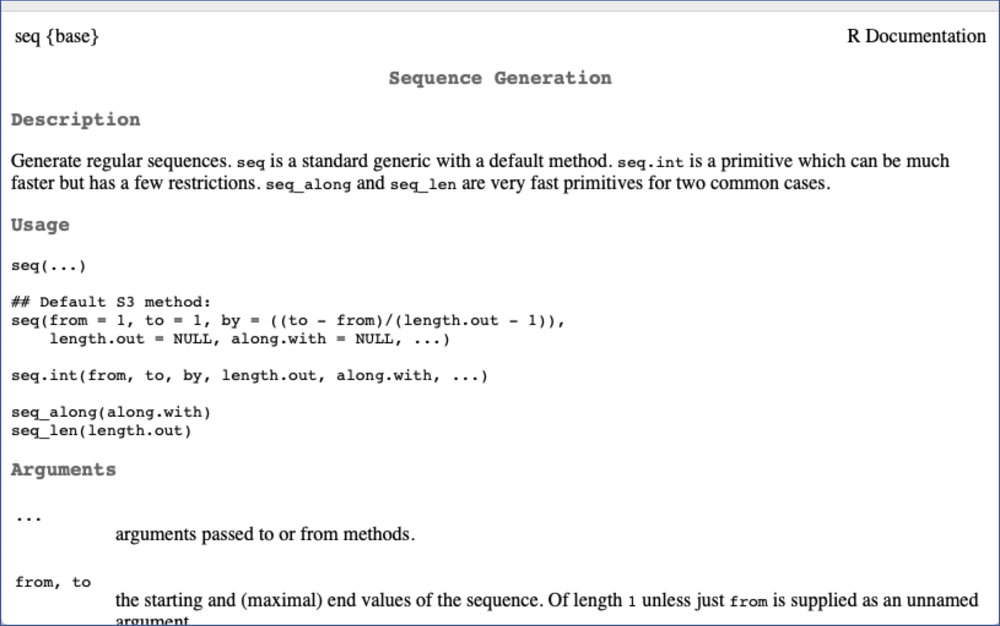
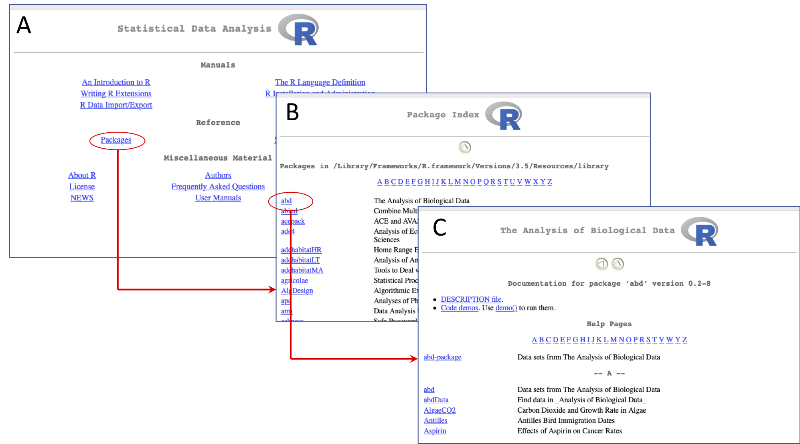
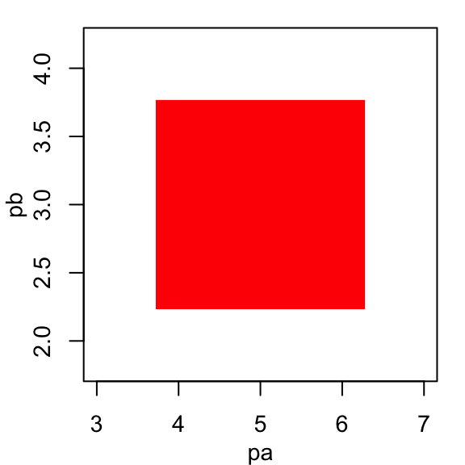

Chapter 2 Generalidades
En esta sección se revisan aspectos básicos sobre el software R tales como conocer sus ventanas, identificar el prompt y trabajar en la línea de comandos, crear, manejar y guardar scripts básicos, establecer el director de trabajo, conocer el manejo de un comando, paquetes y su instalación, etc.
2.1 Ventanas de R: Consola y script
Cuando abriemos R aparece una ventana llamada la consola. En esta ventana escribimos ordenes para R y se imprimen los resultados de tales ordenes. Enseguida se describen algunos aspectos relevantes del trabajo en la consola.
2.1.1 Prompt y línea de comandos
El prompt (>) en la consola indica que el R esta listo para una nueva orden. El renglón cuyo inicio es marcado por el prompt se conoce como línea de comandos; en ella se escriben ordenes para R, y estas ordenes se ejecutan con un enter (Figura 2.1).

Figure 2.1: Consola del R mostrando el prompt (>) y la línea de comandos
Aquí un ejemplo del prompt con una orden para R en la línea de comandos:
[1] 46.97059El cuadro de bajo indica la impresión del resultado. El [1] que antecede el resultado indica la posición del resultado en la impresión. Así, el resultado 46.97059 esta en la posición nro. 1 de la impresión.
Si al ejecutar una orden, la misma esta incompleta, el R muestra un signo + en la siguiente línea indicando que falta algo de la orden anterior.
Si se conoce la parte faltante para completar la orden se puede escribir luego del signo +:
[1] 46.97059Si no se conoce lo que falta, se debe usar la tecla ESC para obligar al R a mostrar nuevamente el prompt, para después inciar la expresión desde el principio.
2.1.2 Escribiendo en el script
El script es un archivo de texto plano (similar a word pero, no le pone formato al texto) donde se escriben las ordenes para R de forma más comada. Cuando se este seguro de las ordenes escritas se pueden enviar a la consola usando la combinación de teclas CTRL + R.
Es recomendable iniciar cualquier script con la fecha, un título corto sobre el contenido del script y el nombre del autor. Todo el texto que este a la derecha del signo # se deja como comentario y no se ejecuta.
# 17-jul-2019
# Ejemplo de un script
# Pablo A. Guzman
# Calculos
5 + 67/34 # calculo A
6 + 67/34 # calculo B
7 + 67/34 # calculo CEl archivo script se puede guardar con la extensión .R (recomendado) o con .txt.
2.2 Comandos
Un comando es un objeto que realiza una tarea específica. Algunos ejemplos son:
- Comando
rep: repite un número o un conjunto de números cierta cantidad de veces. - Comando
seq: genera una secuencia de números. - Comando
sqrt: saca la raíz cuadrada a un número.
2.2.1 Sintaxis de un comando
Un comando en R tiene la siguiente forma:
donde la palabra nombre es el nombre del comando y dentro de los paretensis se encuentran los argumentos (arg1, arg2, etc.) del comando. Algunos ejemplos usando los comandos descritos arriba:
[1] 4 4 4 4 4[1] 4 6 8 10 12[1] 32.2.2 Ayuda sobre comandos
Si sabemos el nombre de un comando podemos ir directamente a la archivo de ayuda del comando usando la sintaxis: ?nombre, donde nombre es el nombre del comando. P.e.,

Figure 2.2: Ayuda del comando seq
La figura 2.2 muestra la ayuda del comando seq. Otra forma de solicitar ayuda es con el comando help:
Si no sabemos el nombre del comando, si no que queremos buscar en todo la ayuda, donde aparece cierta palabra usamos doble signo de interrogación de la siguiente forma:
2.2.3 Orden de los argumentos
Los argumentos de un comando tienen un orden específico. Si se respeta el orden, se puede omitir el nombre del argumento y escribirse sólo su valor. P.e., el orden de los argumentos del comando seq son from, to y by. Si respetamos este orden podemos usar el comando de la siguiente forma:
[1] 4 6 8 10 12El orden se puede mantener parcialmente y en ese caso se pueden usar nombres para algunos argumentos y para otros no:
[1] 4 6 8 10 12Podemos consultar los argumentos y su orden en la ayuda (sección: arguments) del comando:
2.3 Paquetes o librerías
Un paquete (o librería) es un conjunto de comandos. Es decir los comandos se agrupan en paquetes. Cuando instalamos R, este ya viene con varios paquetes instalados tales como: base, utils, stats, Matrix, Lattice, etc. P.e., los comandos seq, rep y sqrt revisados atras son del paquete base. Sin embargo, en el CRAN (repositorios de R) existen más de 14000 paquetes disponibles.
Algunas necesidades relevantes con paquetes son las siguientes:
Identificar el paquete al cual pertenece cierto comando. Esto se puede hacer consultando la ayuda del comando. En la esquina superior izquierda aparece el nombre del paquete entre llaves, vease la figura 2.2.
Identificar todos los comandos pertenecientes a cierto paquete: Consulte la ayuda del paquete. Para esto, siga la ruta: Menu Ayuda -> Ayuda HTML -> Paquetes -> Seleccione el paquete -> Lista de comandos. La Figura 2.3 muestra esta ruta hasta seleccionar la lista de comandos del paquete
abd(???), este es un paquete con bases de datos del libro de (???).
Figure 2.3: A. Página principal de la ayuda HTML. Se marca la opción Packages. B. Inicio de la página de la lista de paquetes luego de acceder por la opción Packages. Se selecciona el paquete
abd. C. Lista de comandos del paqueteabd. Este paquete no viene instalado con el R. Para instalación de paquetes vaya a aquíConocer cuales paquetes tenemos instalados. Siga la ruta Menu Paquetes -> Cargar paquete, esto le abre un cuadro de dialogo con los paquetes instalados. También, la siguiente expresión para R abre una ventana con un listado de los paquetes instalados:
Visitar el CRAN (repositorios del R) para buscar paquetes: En el enlace https://cran.r-project.org/web/packages/. En esta página puede escoger consultar los paquetes en orden alfabetico o por fecha de publicación. P.e., seleccione por orden alfabetico. Cuando este en la página del listado de paquetes se recomienda usar el buscador de su explorador (se activa con las teclas CTRL + F) para buscar temas por alguna palabra clave. P.e., busque la palabra clave “genet” o “ecology” para ver que paquetes se relacionan con estos temas.
2.3.1 Instalando paquetes
Para instalar un paquete se recomienda hacerlo desde R usando el comando install.packages. Suponga que se desea instalar el paquete ape (???) el cual no viene instalado con el R y esta enfocado al análisis filogenético. Puede verificar que ape aparece en el CRAN. Para instalarlo, se escribe:
La expresión anterior instala tanto el paquete de interés como los paquetes de los cuales depende. Usted puede consultar si el paquete en efecto se instaló usando alguno de los métodos revisados atras. También puede preguntar de forma específica si el paquete esta instalado usando la siguiente expresión:
> # Se consulta si el paquete 'ape' esta instalado:
> is.element(el = 'ape', set = installed.packages()[, "Package"])[1] TRUEEl resultado TRUE indica que el paquete ape si esta instalado.
2.3.2 Activando paquetes
La orden anterior descarga e instala un paquete, pero no lo activa. Cuando un paquete se instala, permanece “apagado” o “escondido” y sus comandos no estarán disponibles hasta que se active o se prenda el paquete en una sesión específica. Para activar un paquete se usa el comando library:
La instalación de un paquete sólo es necesario hacerla una vez, pero la activación del paquete se debe hacer cada vez que volvamos a abrir el R (y se requiera el paquete). El comando search, sin argumentos, imprime en la consola sólo los paquetes activados en una sesión.
2.4 Creando o guardando objetos
El R es un lenguaje orientado a objetos. Esto quiere decir que todo en R es un objeto que se puede manipular (crear, modificar, borrar) y que ocupa un espacio físico en la memoria de nuestro computador. Piense en un objeto como un contenedor de información.
Así, comandos tales como seq o rep son objetos que ya vienen instalados con R y que contienen información sobre como realizar tareas específicas. Otros tipos de objetos nos permiten almacenar información (datos) bajo diferentes estructuras de organización.
Si vienen el R ya pone a nuestra disposición muchos objetos, el usuario puede crear sus propios objetos. Para crear un nuevo objeto con “algo” dentro, usamos una flecha (<-) creada por la combinación de teclas menor que (<) y el guión medio (-). Crear un objeto es lo mismo que guardar información en un objeto. Aquí algunos ejemplos:
> x <- 45 # se guarda el 45 en x o se crea x con el nro. 45
> w <- seq(4, 12, 2) # se guarda el resultado del comando seq
> z <- x^2 # se guarda el resultado de elevear al cuadrado el objeto 'x'Notese que cuando se guarda o se crea un objeto, no se imprime por defecto en la consola el contenido del objeto. Para ver ese contenido, se debe ejecutar el nombre del objeto creado:
[1] 45[1] 4 6 8 10 12La flecha (<-) indica que se esta asignando la información al objeto donde apunta la flecha. De esta forma, la flecha funciona en ambos sentidos. Así, las siguientes dos expresiones son equivalentes:
2.4.1 Recomendaciones para darle nombre a objetos
El nombre debe ser una sola palabra (no debe tener espacios) sin caracteres especiales (p.e., tildes, “/”, “:”, “<”, “( )”)
Evite usar la ñ en el nombre de un objeto. También evite usar el nombre de un comando ya existente en R.
El nombre debe ser corto pero diciente del contenido del objeto. Algo que nos ayude a recordar que tiene el objeto. P.e., si vamos a registrar la edad de una persona y usamos
xcomo nombre del objeto, en unos días olvidaremos que tiene ese objeto. Pero si usamos la palabraedadcomo nombre, recordaremos más fácil su contenido.Evite usar mayusculas. P.e., un nombre tal como
Edadserá mas propenso a generar errores de escritura que un nombre comoedad.Si quiere usar una combinación de dos palabras para nombrar un objeto, utilice alguna de las siguientes estrategias:
- Mínuscula y mayuscula. P.e., edadMujeres
- Separadas por un guión bajo. P.e., edad_mujeres
- Separadas por un punto. P.e., edad.mujeres
Utilice un nombre clave como
temp(de temporal) para nombrer objetos que no tienen mucha importancia en su sesión y que muy posiblemente los va a borrar después.
2.5 Ambiente de trabajo
El ambiente de trabajo (environment ó workspace) esta conformado por los objetos que el usuario crea o guarda en una sesión. P.e., en la sección anterior creamos tres objetos x, w y z de modo que estos tres objetos conforman nuestro ambiente de trabajo actual.
2.5.1 Listar y borrar objetos del ambiente de trabajo
Para imprimir el nombre de los objetos que conforman el ambiente de trabajo usamos el comando ls sin argumentos:
[1] "w" "x" "z"Para borrar objetos específicos del ambiente de trabajo, usamos el comado rm:
Volvemos a preguntar por los objetos:
[1] "w" "z"y notamos que ya no aparece el objeto x. Para borrar todos los objetos de una sola vez usamos la siguiente la expresión:
Observe que ya no existe ningún objeto:
character(0)El resultado character(0) representa que le resultado esta vacio, indicando que no existe ningún objeto en el ambiente de trabajo.
2.5.2 Guardando el ambiente de trabajo
Para guardar en nuestro computador todo el ambiente de trabajo (es decir, todos los objetos que hemos creado) usamos el comando save.image. Enseguida creamos tres objetos (puesto que al final de la sección anterior borramos todo) y luego usamos save.image para guardarlos:
> x <- 45 # se guarda el 45 en x o se crea x con el nro. 45
> w <- seq(4, 12, 2) # se guarda el resultado del comando seq
> z <- x^2 # se guarda el resultado de elevear al cuadrado el objeto 'x'
> save.image('mis_objetos.RData') # se guarda el workspace (todos los objetos creados en la sesion)
> save(x, w, file = 'xw.RData') # se guardan solo los objetos x, wEl comando save.image guarda o crea un archivo llamado mis_objetos.RData. Este comando guarda todos los objetos del ambiente de trabajo, mientras que el comando save guarda objetos específicos. En este caso, con el comando save se guardan sólo x y w en un archivo llamado xw.RData.
En ambos casos, los archivos generados quedan alojados en una carpeta de nuestro computador conocida como el directorio de trabajo (working directory). Cuando abrimos R, si no hacemos otra cosa, él mismo determina un directorio de trabajo. Para conocer el directorio de trabajo actual se usa el comando getwd:
[1] "/Users/pabloandres/Documents"Usted puede examinar el contenido de su directorio de trabajo usando el comando dir (ó el comando list.files):
[1] "Dropbox" "mis_objetos.RData"
[3] "OneDrive" "OneDrive - Universidad CES"
[5] "xw.RData" Note que existen 5 archivos en el directorio de trabajo y dos de ellos son mis_objetos.RData y xw.RData, los cuales fueron guardados atras usando los comandos save.image y save respectivamente.
2.5.3 Cambiando el directorio de trabajo
El directorio de trabajo (working directory) es una carpeta en el computador donde R guarda o lee archivos por defecto. Es muy importante conocer cuál es este directorio para poder gestionar los archivos asociados a nuestra sesión de trabajo con R.
Al comienzo de toda sesión es recomendable establecer nuestro propio directorio de trabajo. Para hacer esto aplique los siguientes los pasos:
Cree una carpeta en alguna ubicación de su computador. P.e., enseguida crearé una carpeta llamada
progen la ruta/Users/pabloandres/Documentsde mi computador. Usted debe buscar su propia ubicación para crear la carpetaprog.En R use el comando
setwdpara establecer el directorio de trabajo a la carpeta creada en el paso (1):Lo anterior también se puede hacer de forma interactiva desde la consola de R, usando la opción
Cambiar dir ...del Menu File en Windows o del Menu Misc en Mac.Verifique con
getwdque el directorio de trabajo si halla cambiado:[1] "/Users/pabloandres/Documents/prog"Ahora, cuando guarde un archivo desde R, este quedará en el nuevo directorio de trabajo. P.e., puede volver a usar
save.imagepara guardar el ambiente de trabajo:y verificamos el contenido del nuevo directorio de trabajo con
dir:[1] "mis_objetos.RData"
Note que ahora, el archivo mis_objetos.RData quedó guardado en el nuevo directorio de trabajo.
2.5.4 Cargando objetos al ambiente de trabajo
Si tenemos un archivo .RData con algunos objetos y queremos cargar este archivo a nuestro ambiente de trabajo actual, podemos usar alguna de las siguientes opciones:
Usar el comando
load. P.e., la ordenload('mis_objetos.RData')carga los objetos del archivomis_objetos.RData. El archivo debe estar en el directorio de trabajo.Usar la opción
Cargar área de trabajodel menuArchivode la consola en Windows o la opciónLoad Workspace File ...del menuWorkspaceen la consola de Mac.
Atención: Si va a cargar un
.RDataque tiene objetos con el mismo nombre de objetos que ya tiene en su ambiente de trabajo, estos objetos serán reemplazados por los nuevos. Por tanto, tenga cuidado cuando realiza esta acción.
2.6 Ejercicios
Escriba el código R requerido para calcular \(y\) en las siguientes funciones matemáticas:
\(y = |4x - 1| - 2\); para \(x = -3\)
\(y = \frac{1}{3}\sqrt{7 - x}\); para \(x = -2\)
\(y = \dfrac{\sqrt{x+1}}{x^ 2}\); para \(x = \sqrt{2}\)
\(y = \dfrac{e^x + e^{-x}}{2}\); para \(x = 1\) y para \(x = -1\)
\(y = ae^{-be^{-cx}}\); para \(x = 4, a = 5, b = 1, c = 1\)
\(y = \log_{3} x\); para \(x = 9\)
\(y = \log_{10} x\); para \(x = 0.0001\)
Ayuda:
?log10;?abs;?Arithmetic;?sqrtEscriba el código R que le permita verificar que el valor de \(x\) dado es una solución de las siguientes (in)ecuaciones.
\(\log_{3} (7-x) - \log_{3} (1-x) = 1\). Solución: \(x = -2\)
\(\dfrac{x(1-x)}{x + 2} \geq 0\). Una posible solución: \(x = 0.5\)
Explique y diferencie los siguientes conceptos: comando, argumento, paquete y librería.
Explique y diferencie los siguientes conceptos: objeto, ambiente de trabajo, directorio de trabajo.
Considere la ecuación \(y = x^2 e^{-x/2}\), donde \(e = 2.7183\) es la base de los logaritmos naturales. Cree un script para R que calcule \(y\) para \(x = 2\), \(x = 4\) y \(x = 6\). Guarde cada resultado en un objeto, p.e.,
y2,y4yy6. Guarde los tres objetos en un archivo .RData. Decida usted el nombre del archivo. Ayuda: En R el comandoexpsaca la exponencial a un número. Por ejemplo, \(e^1 =\)exp(1), \(e^2 =\)exp(2). Envie el archivo .RData al correo pguzman@ces.edu.co.Sin hacerle ningún cambio, ejecute el siguiente script de código R, identifique los errores y corrijalos. Vuelva a ejecutar el script y verifique su corrección.
pa <- 45/9 # se crea el objeto pa pb - 3 # se crea el objeto pb # se hace un grafico con un punto en la coordenada (pa, pb) plot(x = pa, y = pb, pch = 15 cex = 20, col = 'red')Al corregir el código y ejecutarlo se debe producir el siguiente gráfico:

En cada caso muestre el código requerido para crear los siguientes patrones de números o texto:
- 10, 20, 30, 40, 50
- -10, 0, 10, 20, 30, 40, 50
- -3, -2, -1, 0, 1, 2, 3, 4, 5
- 45, 45, 45, 45, 45, 45, 45, 45, 45, 45
- thanos, thanos, thanos, thanos, thanos
Para cada comando, (a) describa para que sirve, (b) liste sus tres primeros argumentos, y (c) diga a que paquete pertence.
runifsubstrinstall.packagesdir
Considere el siguiente script con código R:
library(graph) nodos <- c('A', 'B', 'C', 'D') bordes <- list( A = list(edges = c('B', 'C') ), B = list(edges = 'D'), C = list(), D = list() ) g1 <- new('graphNEL', nodes = nodos, edgeL = bordes, edgemode = 'directed') g1Para el código dado (sin ejecutarlo), responder lo siguiente:
- ¿Cuáles comandos se utilizan?
- ¿Cuáles objetos fueron creados?
- ¿Cuáles librerías fueron activadas?
- Si se ejecutará todo en la consola, ¿de cuál objeto se imprimiría su contenido?
- Ejecute en la consola la primera línea (
library(graph)), si le sale un error, explique porque salio ese error.
Verifique si tiene instalado el paquete
dismo. Si no, descarguelo, instalelo y activelo en su sesión de R. Luego responda las siguientes preguntas:- ¿Para qué sirve el paquete
dismo?. - Busque el comando
gbife indique para sirve el comando. - Ejecute la siguiente orden:
gbif('solanum', 'acaule', download=FALSE). Usando la ayuda del comando, intente explicar el resultado. (Nota: debe tener conexión a internet).
- ¿Para qué sirve el paquete
Considere la siguiente secuencia de ordenes de R que fueron ejecutadas en la consola con su respectiva impresión:
[1] "/Users/pabloandres/Documents"[1] "Dropbox" "Notas" [3] "OneDrive" "OneDrive - Universidad CES"[1] "/Users/pabloandres/Documents/Notas"> nota1 <- 2.1 > nota2 <- 3.1 > nota3 <- 2.9 > nota.final <- nota1*0.2 + nota2*0.5 + nota3*0.3 > save(nota.final, file = 'minota.RData') # DExplique con detalle que acción fue realizada en cada una de las líneas marcadas con los comentarios A, B, C y D.
En que carpeta quedó guardado el archivo
mininota.RDataDescriba el contenido del archivo
mininota.RData
El siguiente script de código R requiere el archivo
pesticidas.RData.# 12-may-2018 # Grafico sobre el uso de herbicidas en Estados Unidos entre 1964 y 1990 # en millones de libras de ingrediente activo. # Autor: Pedro Perez. # Datos: load('pesticidas.RData') # coloque aqui lo que hace esta orden # Se hace el grafico par(mar = c(3.5, 4, 2.5, 1), mgp = c(2,1,0), cex = 0.9) with(farmPest, plot(x = year, y = herb, xlab = 'Tiempo (Años)', ylab = 'Herbicidas\n(millones de libras de ingrediente activo)', pch = 21, bg = 'skyblue', type = 'b', cex = 1.5, main = 'Uso de herbicidas en granja en Estados Unidos') )Descargue el archivo
pesticidas.RDatadesde aquí. Cree y establezca un directorio de trabajo. Dentro de esta carpeta, ubique el archivopesticidas.RData. También cree un nuevo script que contenga el código dado arriba. Verifique que su espacio de trabajo este vacio.Ejecute el código y observe el resultado. ¿Cuáles objetos se crearon? Explore y describa el contenido de estos objetos.
¿Qué hace la línea
load(pesticidas.RData)?Escribalo en el código.¿Cuáles comandos se utilizan en el código?
Mencione el nombre de los argumentos usados en
par.¿Cuántos argumentos se usaron en
with, se usó el nombre de sus argumentos o sólo su valor?Mencione el nombre de los argumentos usados en
plot.Cambie el color del relleno de los puntos del gráfico con el argumento
bgdel comandoplot. Seleccione un color de alguno de los 657 colores que salen cuando se imprime la ordencolors()en la consola. Guarde el nuevo gráfico con extensión.jpgen su directorio de trabajo.Al final del código, agregue la siguiente línea para modificar el objeto cargado en el paso (b):
Explore nuevamente el objeto y describa como cambio el objeto.
- Agregue una línea al código que guarde un archivo llamado
pesticidas.RDatacon todos los objetos usados durante la sesión. Note que como este archivo tiene el mismo nombre que el inicial, será reemplazado. - A este momento debe tener tres archivos en su directorio de trabajo. ¿Cuáles? Comprima la carpeta con estos tres archivos y envíela por correo al pguzman@ces.edu.co.